1. Setting up your computer#
This file is a Jupyter notebook with instructions on how to install Jupyter Lab and so you can not download and run it until your complete this activity. Neither can you run it from within the preview mode of GitHub, therefor I created an HTML copy that will work in a browser: Please use THIS LINK to open this file in a web browser. Once you have jupyter running you can come back to this notebook as a resource.
Learning Objectives#
This is the first lesson of the class and the objective is two fold.
Install some of the core software we will need in this class.
Start becoming familiar with Command Line Interfaces (CLI) and the management of packages
Install Windows Subsystem Linux
Ubuntu terminal and bash commands
Install miniconda package management system
Conda Commands
Create a virtual (Conda) environment
Install the following packages
Jupyter lab (Base Environment)
Numpy (Virtual Environment)
Matplotlib (Virtual Environment)
Connecting Conda Environments to Jupyter Lab
Create a Project Workspace
Test your system
Overview of what we did
Notes
Enable Virtualization
* Note: If you have a Mac you do not need to install WSL/Ubuntu because Mac’s Terminal uses a Unix-based shell (bash or zsh), which is very similar to Linux.
1. Installing Linux via WSL#
NOTE: You do not Install WSL if you have a Mac
Before installing WSL, ensure your computer meets these requirements:
50-100 GB of free space on your hard drive
At least 8 GB RAM for basic usage and exercises in this class
16 GB RAM or more recommended for intensive machine learning activities
Windows 10 version 2004 or higher, or Windows 11
Administrative privileges on your computer
WSL will automatically install the Ubuntu distribution of Linux by default, but you can choose other distributions if desired. Note that while WSL can run on traditional HDDs, an SSD is recommended for better performance.
WSL Installation Instructions:#
Type:
"Windows PowerShell"in the Windows search barType:
wsl --installType:
exit
For additional information see
Once installed you can start Ubuntu through the Windows search bar (by typing Ubuntu). If you get an error like:
WslRegisterDistribution failed with error: 0x80370102 Please enable the Virtual Machine Platform Windows feature and ensure virtualization is enabled in the BIOS. Go to Notes: Enable Virtualization
The first time you start Ubuntu you will be asked Enter new Unix username:, which needs to be in lowercase, and to enter a new password.
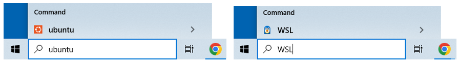
Note, Typing either Ubuntu or WSL will start Ubuntu on your windows machine as Ubuntu is the only version of Linux we are running. To avoid issues if another version is installed it is suggested that you always start with Ubuntu, and not WSL
WSL allows you to run more than one version of Linux, and so right now it makes no difference which you type, as WSL will open Ubuntu. If you open the Windows file explorer and navigate to the bottom you can see the directory structure and how WSL is at the very (there will be a Linux Icon at the bottom of your file explorer and your files can be found in the path \\wsl.localhost\Ubuntu\home\username (rebelford). It is in this directory that you will install python and set up a subdirectory for your class project files.
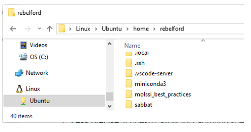
Screen capture of the directory structure as shown in Windows File Explorer
Why install WSL when you can use Windows?#
Although Conda can be installed directly on Windows there are several reasons we are using WSL
Many Python Libraries are better supported with Linux OS than Windows
Linux is a standard environment for open source software production
WSL allows Linux to integrate with Windows file system (in contrast to a dual boot setup).
Python scripts often run faster on WSL compared to native Windows setup
Learning Linux Bash scripts is a useful skill
2. Ubuntu and Bash Commands#
Ubuntu is the default Linux installation with WSL. It is a very popular Linux distribution and is consider beginner-friendly. It is also regularly updated and there are extensive online resources. We will install miniconda on Ubuntu and then a Jupyter Lab through miniconda. we will only be using the command line to update software and
In this class, we will use the Ubuntu command line to:
Update our system software to ensure we have the latest versions.
Install Miniconda3, a tool that helps us manage Python and its packages.
Create a virtual environment, which is like a separate workspace for our project.
Install and maintain Jupyter Lab in the base environment and packages in virtual environments.
Launch Jupyter Lab, which is a web interface that runs on your computer and will automatically start a Python kernel, utilizing the packages of the virtual environment of your choice.
By following these steps, you’ll set up a powerful scientific computing environment that allows you to write and run Python code, create interactive notebooks, and manage your data analysis projects effectively.
Ubuntu Terminal#
The terminal is the CLI (Command line Interface) you use to pass commands to the interactive shell, which by default is the BASH (Bourne Again SHell) for Unbuntu. This interacts with the kernel, which is the part of the operating system that manages resources, processes, memory, device management and system calls, and in effect executes the code. There is another shell, the system shell, which is used at boot-up and for system level processes, which by default is the DASH shell.
You can open more than one terminal by going to the start menu and typing Ubuntu.
If you right-click on the top bar of the terminal (fig. 3) you can access properties menu and enable cut and paste processes through <ctrl>shift c or v (copy or paste), or change font size and background color.
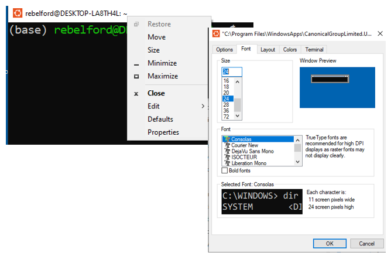
Right-click on the top of the terminal bar opens a variety of menu options. You will want to enable cut and paste operations, and potentially alter colors and font sizes.
WSL Ubuntu Password Recovery#
Some commands like sudo require a password. If you forget it you can reset your WSL password through Windows PowerShell.
Open PowerShell or Windows Command Prompt as an Administrator
type:
wsl -u roottype:
passwd <username>where <username> is your usernameEnter and confirm new password when prompted
type:
exit
Mac Terminal#
To access Mac terminal
Open Spotlight Search (Command + Space)
Type “Terminal” and press Enter
Alternatively, you can find Terminal in Applications > Utilities > Terminal
The following cell is a code cell that is connected to a Youtube video that shows how to start the terminal in Mac, and then goes over basic bash commands, which is the next topic. So if you are not familiar with bash, you should watch it, even if you are using WSL Ubuntu. Note, You need to run the following code cell by hitting shift-enter if the code has not already been executed
%%html
# this is a code cell that connects to a youtube, and you need to execute it the first time you start the kernel with shift-enter.
<iframe width="560" height="315" src="https://www.youtube.com/embed/zAanEBEc7ZU?si=i8oHwcRcTcwKchOt" title="YouTube video player" frameborder="0" allow="accelerometer; autoplay; clipboard-write; encrypted-media; gyroscope; picture-in-picture; web-share" referrerpolicy="strict-origin-when-cross-origin" allowfullscreen></iframe>
Getting started with bash#
Before we install Miniconda3 we need to update our packages and versions. Highlighted Text are commands you need to past into the Ubuntu command line and run. Note, we could use Anaconda or Anaconda Navigator, but in this class you need to use Miniconda. Miniconda is actually a minimal installation of Anaconda, which comes with many packages preinstalled and I want you to learn how to install and maintain your packages. Anaconda Navigator is a GUI (Graphical User Interface) for running Anaconda and I want you to gain experience with CLI (Command Line Interfaces), I also find it to be slower to load.
Update Packages
Type:sudo apt update && sudo apt upgrade
This command does two things:sudo apt update: Updates the list of available packages and their versions. You may need your password the first time you run this
sudo apt upgrade: Actually upgrades the installed packages to their latest versions.
Running this before installing new software ensures you’re working with the most up-to-date system packages, which can prevent compatibility issues.
Explanation of the update command:
sudo: Gives you temporary administrative privileges.
apt: The package management tool for Ubuntu.
&&: Runs the second command only if the first one succeeds.
Tutorials#
Some Common File Managment Bash Commands#
You should use this section as a reference, and proceed to section (3) Installing Miniconda.
pwdPrint Working Directory (shows where you are in the file tree)lslist files and directoriesls -l -along list including hidden filesls ../(reaches up one level)
cdchange directoriescd ~navigate to home directorycd /navigate to root directorycd ..go up one levelcd -go down one level
mkdir <directory_name>make a directory in current locationrmdir <directory_name>remove a directoryrmdir -d <directory_name>remove empty directoryrmdir -r <directory_name>recursive, removes files and subfolders but asks for confirmationrmdir -rf <directory_name>recursive and forced (does not ask for confirmation)
rm <filename.extensionremoves filesmv <file_name> <directory_name>moves file to new directoryexitcloses terminal
NOTE: there are many bash commands associated with installing and managing packages and we will preferentially use Bash commands involving Conda, like conda install <package-name>, although sometimes we will need to use bash commands like pip install <package-name> which involves the Python Package Index. Usually you have both options and you should first try the conda option.
3. Installing Miniconda#
First make sure you are in your user home directory (/home/username).
Type:
pwdprint working directory, which should return your user directory (where you are). If you are not in your user directory typecd ~to navigate to itType:
ls- list files and subdirectories in current directoryInstall Miniconda3 in your user directory. When you install miniconda here, a new directory will be created for miniconda. You do not need to make this directory yourself, it will automatically be created .
You will need to agree to the license and may have to scroll through it (use the down arrow).
You will also need to confirm the location miniconda is being installed at.
You will also want to update the shell profile to initialize conda when the command prompt is activated.
For Linux users
Type:
curl -O https://repo.anaconda.com/miniconda/Miniconda3-latest-Linux-x86_64.shType:
bash Miniconda3-latest-Linux-x86_64.shFor Mac users: (note: I do not have a Mac, and so can not test the instruction, but they seem logical to me)
Type:
curl -O https://repo.anaconda.com/miniconda/Miniconda3-latest-MacOSX-x86_64.shType:
bash Miniconda3-latest-MacOSX-x86_64.sh
Test your installation
Type:
exitcloses the terminalOpen Ubuntu terminal from the start menu
if you see (base) in front of the command prompt, conda is initialized.
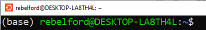
If you do not see it, type
conda init and you should now see (base) in front of the primary prompt.
conda command not found error: If you get this error, refer to article “Conda Command Not Found” by Peter Sawe. You will need to add the path to miniconda3 to your .bashrc file (bash run commands), and this will ensure that Conda and Python will use the versions installed by miniconda.
4. Create Project Workspace#
In this and the following activity we are going to create a workspace for our projects that consists of two directories within our user directory. When we installed miniconda we automatically created the envs directory, which will be where our virtual environments are stored. We also need to create a separate directory outside of miniconda where we keep our project directories, and we will call this the projects directory. This is where we keep the python (*.py) files, Jupyter Notebook (*.ipynb) and any data files associated with a project..
Before we do this you need to look at the following branch of a directory tree.
/home/user/
├── projects/
│ ├── project_a/
│ │ ├── notebook_a.ipynb
│ │ └── requirements.txt
│ └── project_b/
│ ├── notebook_b.ipynb
│ └── requirements.txt
└── miniconda3/
└── envs/
├── env_a/
└── env_b/```
Tree structure showing the two branches that result in the workspace".*
* The following image shows the same directory tree for my computer. The top part uses the GUI of Windows File Explorer and the bottom uses the Ubuntu CLI terminal with the `ls` command.*
Create Projects Directory#
We now need to create the projects directory. Make sure you have activated conda and are in your user directory
Type:
cd ~- change directory to home directoryType:
pwd- print the working directory (verify you are in your user directoryType:
ls- list directory contents, note there is no projects directoryType:
mkdir projects- make the projects directoryType:
ls- show that the directory was madeType:
cd projects- change directory to projects (use keyboard shorcut, type mkdirprand thentabwhich will do an autocompleteType:
ls- shows the directory you made is empty. This directory will eventually contain subdirectories with the files for our various projects. This is where we will keep our data, python and jupyter notebook programs.
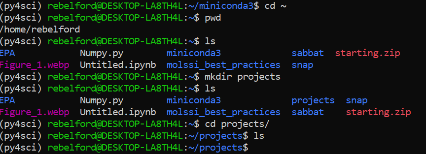
The above commands as seen in the terminal
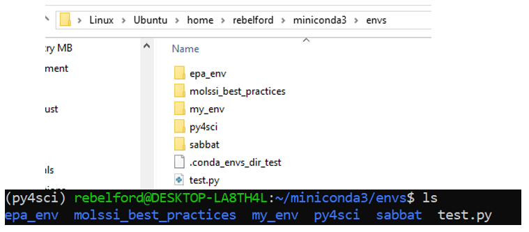
Two views of the environment folder created by miniconda3 within WSL. Note: your envs will be empty until you have created an environment. The top folder shows the path as seen by Windows File Explorer GUI (Graphical User Interface) for those students using WSL, and the bottom one by the Ubuntu terminal CLI (Command Line Interface).
5. Common Conda Commands#
Offical Conda Getting Started Tutorial (Note: follow our tutorial below for creating your environment for this class).
Please Note: This section is for reference, Proceed to Section 6 for step-by-step instructions
conda update --allBefore doing anything you should run this command to update all packagesconda list- shows packages in an environmentconda list package_name- tells how package was installed (which channel).
conda info --envs- shows installed environmentsconda activate environment_name- activates an environment so you can use the packages in itconda deactivate- deactivates current environment and switches back to mainconda create --name environment_name- creates environment called environment_nameconda install package_name- installs package from conda’s main channelconda instal pack1 pack2 pack3- installing multiple packages at onceconda install -c conda-forge package_name- -c allows you to install from other sources (conda forge)
conda config --show channels- shows chanels, these are sources you can get packages fromconda config show-shows the configuation of the current environmentTo set channel priority to conda forge
conda activate myenv
conda config --env --add channels defaults
conda config --env --add channels conda-forge
conda config --env --set channel_priority strict
to set channel priority in base
conda config --add channels defaults
conda config --add channels conda-forge
conda config --set channel_priority strict
conda clean --allshould be done in the bass environment to clean up unused packages and tar balls after execution you should update the base withconda update -n base -c defaults conda
Updating Conda#
When you update conda in the base environment you want to run two commands.
Type:
conda update -n base -c defaults condaType:
conda update --allLet’s look at each of these in detail
When you want to update conda in an environment, say ‘my_env’ you use three commands. Note, conda itself is installed in the base environment, and so you must update it there. If your base is already updated you can omit the second command.
Type:
conda update -n base -c defaults condaType:
conda activate my_envType:
conda update --all
Now lets look at what each of these steps does.
conda update -n base -c defaults conda
This command updates conda itself in the base environment:
conda update: This is the basic command to update packages.-n base: Specifies that the update should occur in the “base” environment, which is the default conda environment.-c defaults: Instructs conda to use the default channel for the update.conda: This is the package being updated, which is conda itself.
conda activate my_env
this commands activates the environment “my_env”
conda update --all
conda update: Again, this is the basic update command.--all: This flag tells conda to update all packages in the current environment to their latest compatible versions.conda list --revisionsgives the history of the current environment
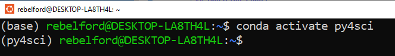
Fig 4: You can identify the environment by the parenthesis to the left of the command prompt. The first line is in the base environment, and when conda activate py4sci is executed it switches to the py4sci environment. Note, you can run multiple terminals in different environments concurrently
6. Creating Conda Environments#
Overview of Virtual Environments and their Pieces#
Before proceeding update Conda as shown above.
Our goal is to create a virtual environment we can access through a Jupyter Notebook and I will try and explain this at a high level before we get into creating our environment.
The Environment is like a container to hold your python interpreter and packages.
When you create an environment you create a python interpreter, and you can specify what version, it can even be python 2. This is done in step 3 below. You subsequently add the packages and their dependencies, and this is the environment you operate in. But you need to be able to access the environment.
When you install the kernel you are creating a way to access the interpreter, this is done in the first part of step 6 below.
When you register the kernel you are giving Jupyter Lab the ability to find the kernel, which is done in the second part of step 6 below.
When you create a conda environment, conda will automatically create a unique folder for it in the miniconda3/envs folder. To see existing environments, run the following command.
conda info --envs
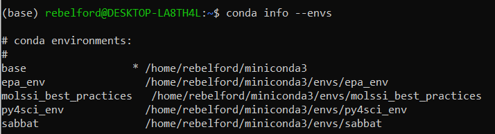
Note, the asterick (*) in front of the base environment path indicates that it is the active environment. This is also indicated by the (base) in front of rebelford@DESKTOP.LA8TH4L in the command prompt. Also note that there are 4 environments, and all are in the envs folder.
Now, you need to understand that your Jupyter Lab notebooks are not stored in your conda environment folder, and in the next section you will create a project folder, where you can keep your notebooks. In step 6 we will create a folder in your user directory for each conda environment where you can store your notebooks
Channel Priority#
Before creating a channel we want to configure a few things in base environment that have global settins and will apply to all environments, unless an environment over rules them.
Channel Priority#
There are several channels that Anaconda uses to acquire channels and Conda Forge is considered as one of the best ones to give priority. The following two lines of code give Conda Forge Priority. You should run these from the base environment.
Type: conda config --add channels conda-forge
Type: conda config --set channel_priority flexible
Creating your first Environment#
In this activity we will create a conda environment called my_env. You should change my_env to the name you want your environment to be called.
Type:
pwdBe sure you are in the /home/username directory, and be sure conda is activated, there should be a (base) to the left of the command prompt. Note, you can navigate to your home/user directory withcd ~
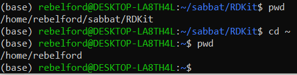
pwd showed us we were in the RDKit directory and cd ~ moved us to the home, which we checked with a second pwd
Type:
python --version- identify the version of python, as it is best to include this when generating the virtual environment. My version is 3.12.4 (see screen shot below)Type:
conda create --name my_env python=YourVersionwill create an environment named “my_env”. You should change that to the name you want your environment called. You will also be prompted for a “y” to install the packages once they ready to ber installed.
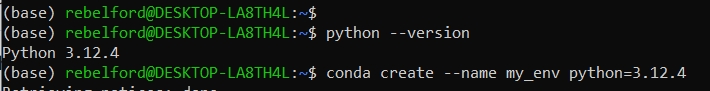
Type:
conda info --envs- You should check that the new environment exits, it should be in an envs folder in miniconda3
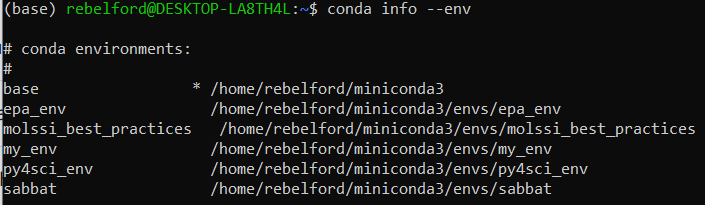
Type:
conda activate my_envNow you are ready to activate your new environment
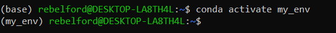
*note how the (base) in front of the command prompt changed to (my_env), and now if we install any packages they will be available in this environment.
The next step involves installing and registering the kernel in the environment.
Type: conda install ipykernel installs the kernel in the virtual environment
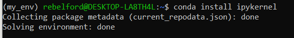
This code installs the kernel in the environment, please pick (y) to proceed once it collects the new packages Although the virtual environment is installed, it is still not registered so that it can be seen in Jupyter Lab
Type: python -m ipykernel install --user --name=my_env --display-name="Python_my_env"
This code registers the kernel and provides access to it
to deactivate your environment use
conda deactivate
7. Installing packages#
Centralized Jupyter Lab#
Type:
pwdYou want to install Jupyter Lab in the base environment, and so you need to be sure you are there.type
conda install jupyterlab(be sure this is in base environment)
Environment Specific Package Installation#
Before installing any packages you should be sure you are in the conda environment you want to install them in (you will see the environment name in parenthesis to the left of the command prompt. We will start by installing some of the most common packages. In this activity we will want to install the followign packages
numpy (numerical python)
matplotlib (ploting program)
First, activate the environment and check for installed packages.
Type
conda info --envs- shows us what environments we have available. Note the * next to the active environment, which is the base one in figure below.Type
conda activate my_envactivates the environment you wish to activateType
conda listshows packages installed in current environment. Note Numpy and matplotlib are not installed
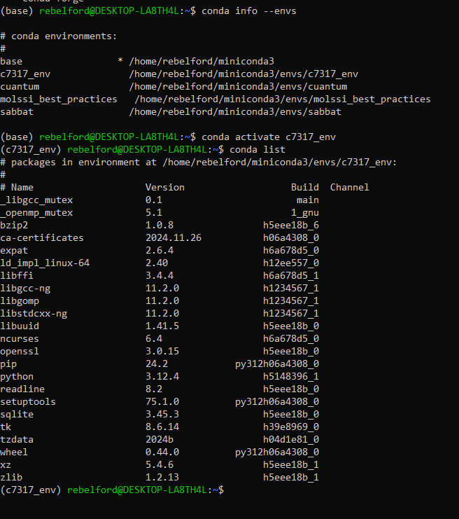
Now lets install some packages: Note, matplotlib uses numpy and so we installed it first
Type conda install numpy
Type conda install matplotlib
To install all in one line of code:
conda install numpy matplotlib
Note, in the above, it does not matter what the order of the packages are, the conda installer will figure out the best order to install the packages with
Updating Packages#
to update packages in an environment you need to be in the environment, and then run
conda update --all
If you want to update all except one, like numpy, you can execute
conda update --all --exclude numpy
8. Connecting Conda Environments to Jupyter Lab#
Now that you have Jupyter lab installed and have created your first environment, you can go to that environment and open the lab.
Open Jupyter Lab in base environment by typing
jupyter lab
But you need to connect the kernel to the one you registered in your environment, which is done by clicking on the box in the upper right corner of your notebook (Python3(ipkernel) in image below).
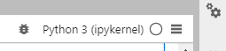
If you click it a drop down box will appear and you can choose the kernel you wish to use in this notebook.
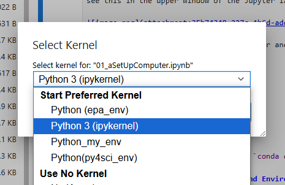
Note: different notebooks can be running different kernels in the same lab. If you connect a notbook to python3(ipykernel), the default kernel and try to run a script like import numpy it will give an error because numpy was not installed there. If you then switch the kernel to py4sci (where you loaded the numpy package), it will work
9. Test your system#
Try to run the code block using the Python3(ipykernel), which is the default kernel and does not have the numpy or matplotlib packages. You should use the keyboard shortcut of shift-enter to execute the code.
Now click on the kernel and select the kernel associated with the environment you installed numpy and matplot lib, and then rerun the code.
import matplotlib.pyplot as plt
import numpy as np
# Simulated user input (replace these to change the curve)
A = 44.56
m = 1.356
# Display what a user would have been asked
print(f"Enter value of pre-exponential A: {A}")
print(f"Enter a value of the exponent m: {m}")
# Generate and plot the exponential curve
x_values = [round(i * 0.4, 10) for i in range(1, 31)]
y_values = [A * np.exp(-m * x) for x in x_values]
exp_array = np.column_stack((x_values, y_values))
plt.plot(exp_array[:, 0], exp_array[:, 1], marker='o')
plt.title(fr'Plot of $y={A:.2f}e^{{-{m:.3f}x}}$ with dynamic ranges.')
plt.xlabel(f'X values from range of {x_values[0]} to {x_values[-1]}')
plt.ylabel(f'Y values from range of {round(y_values[0], 2)} to {round(y_values[-1], 2)}')
plt.text(0.75, 0.95, "Data", transform=plt.gca().transAxes,
verticalalignment='top', horizontalalignment='left')
plt.show()
exp_array
Enter value of pre-exponential A: 44.56
Enter a value of the exponent m: 1.356
array([[4.00000000e-01, 2.59050154e+01],
[8.00000000e-01, 1.50599153e+01],
[1.20000000e+00, 8.75510182e+00],
[1.60000000e+00, 5.08979012e+00],
[2.00000000e+00, 2.95895627e+00],
[2.40000000e+00, 1.72019318e+00],
[2.80000000e+00, 1.00003660e+00],
[3.20000000e+00, 5.81372609e-01],
[3.60000000e+00, 3.37981741e-01],
[4.00000000e+00, 1.96486136e-01],
[4.40000000e+00, 1.14227477e-01],
[4.80000000e+00, 6.64062962e-02],
[5.20000000e+00, 3.86053889e-02],
[5.60000000e+00, 2.24432943e-02],
[6.00000000e+00, 1.30474391e-02],
[6.40000000e+00, 7.58514610e-03],
[6.80000000e+00, 4.40963480e-03],
[7.20000000e+00, 2.56354707e-03],
[7.60000000e+00, 1.49032151e-03],
[8.00000000e+00, 8.66400397e-04],
[8.40000000e+00, 5.03683026e-04],
[8.80000000e+00, 2.92816799e-04],
[9.20000000e+00, 1.70229436e-04],
[9.60000000e+00, 9.89631099e-05],
[1.00000000e+01, 5.75323359e-05],
[1.04000000e+01, 3.34465002e-05],
[1.08000000e+01, 1.94441675e-05],
[1.12000000e+01, 1.13038927e-05],
[1.16000000e+01, 6.57153310e-06],
[1.20000000e+01, 3.82036953e-06]])
10 Overview of What We Did#
Install WSL2 We Installed Windows Subsystem Linux (WSL2) which is a compatibility layer that translates Linux systems calls into windows systems calls and thus is closely integrated with Windows. This allows the Linux kernel to communicate directly with hardware through the host windows operating system (OS).
Ubuntu is the default OS system of WSL2 and was installed when we installed WSL2. So we will be using Ubuntu to install packages. When we run a command like ‘conda install numpy` inside the Ubuntu terminal the packages are installed into the Linux file system managed by WSL2. These packages are isolated within the Linux environment but can interact with files and systems in Windows.
Install Miniconda3 After setting up WSL with Ubuntu we used the Linux terminal to install Miniconda3, which is a minimal installer for Conda. This installation did several things.
Installed Python 3 interpreter, which is the core program that reads and executes Python code.
Installed the Conda Package Manager, which is a tool for managing software packages, dependencies and environments.
Created a Base Environment with a Python interpreter, minimal set of Python libraries and conda as a command line tool
Create and Configure Conda Environments* When we created the conda environment we specified the Python interpreter that environment would use. We then installed a kernel that would work with Jupyter Notebooks (ipykernel) and registered the kernel so a Notebook could find it.
Setup Jupyter LabWe then installed Jupyter Lab in the base environment where we will run a minimal number of Python packages and we connected it to the project environment’s interpreter through the environment’s kernel.
Installed and Tested Data Science Packages In the last step we installed tow data science packages in our project virtual environment, Numpy and Matplotlib, and then ran some code from the Jupyter notebook in the base environment that was running the interpreter in the virtual environment.
Enable_Virtualization#
If you need to enable virtualization in your bios you may need to search online for instructions for your particular computer, there are multiple good videos and the process is relatively straightforward, but it can vary from computer to computer.
Common manufacturers and their BIOS/UEFI access keys.
Dell: F2 or F12
HP: Esc or F10
Lenovo: F1, F2, or a physical Novo Button
Acer: F2 or Delete
Enable Virtualization in Windows 10#
Check Virtualization Status Open Task Manager (Ctrl + Shift + Esc). Navigate to the Performance tab. Look for Virtualization under the CPU section. If it says “Disabled,” proceed to enable it in the BIOS/UEFI.
Access BIOS/UEFI Restart your computer and press the appropriate key during boot (commonly F2, F12, Delete, or Esc). For Dell, use F2 or F12. If your system boots too quickly, access the advanced startup menu: Go to Settings → Update & Security → Recovery. Under Advanced Startup, click Restart Now. Select Troubleshoot → Advanced Options → UEFI Firmware Settings → Restart.
Enable Virtualization In the BIOS/UEFI interface, navigate to the Advanced, Configuration, or Processor tab (varies by system). Look for virtualization settings, such as: Intel Virtualization Technology or AMD SVM Mode. Enable the setting, save changes (usually F10), and exit.
Enable Virtualization Windows 11:#
Check Virtualization Status Same process as Windows 10 via Task Manager.
Access BIOS/UEFI Restart your computer and press the appropriate key during boot (commonly F2, F12, Delete, or Esc). Use the advanced startup menu for faster systems: Go to Settings → System → Recovery. Under Advanced Startup, click Restart Now. Select Troubleshoot → Advanced Options → UEFI Firmware Settings → Restart.
Enable Virtualization Follow the same steps as in Windows 10 to locate and enable virtualization.
Acknowledgements#
The following sources were used in developing the content of this module.
MoLSSI Best Practices: Introduction to the Command Line](https://education.molssi.org/python-package-best-practices/00-command-line-basics.html)
This content was also developed with assistance from Perplexity AI and Chat GPT. Multiple queries were made during the Fall 2024 and the Spring 2025.